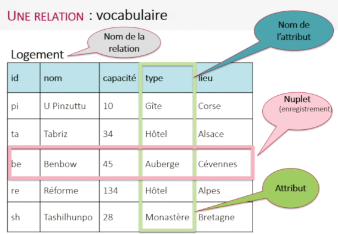
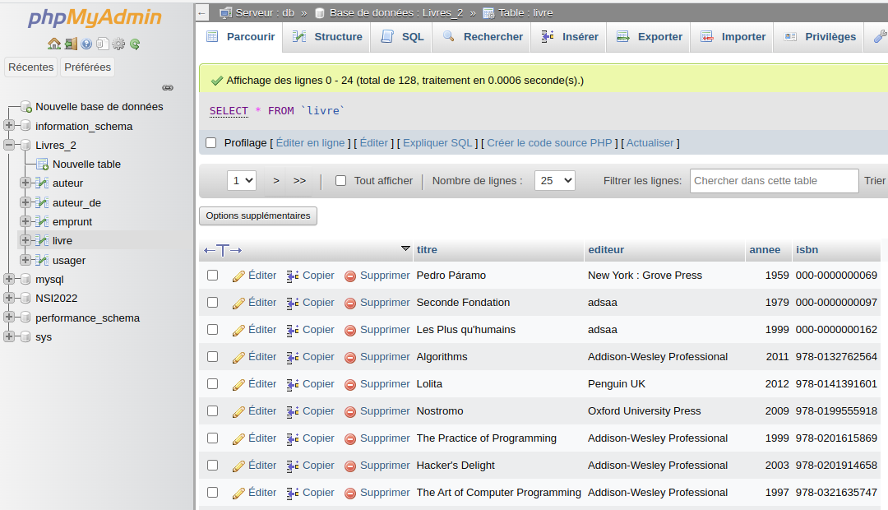

LE MODELE RELATIONNEL⚓︎
Introduction⚓︎
Comme on l'a vu dans l'activité introductive, l'utilisation de structures de données plates souffre de nombreux inconvénients (redondance, mise à jour et recherche difficiles, performances médiocres lorsque le fichier devient volumineux, etc.).
Plus généralement, pour toute application sérieuse, on se tourne vers une base de données.
Définition
On définit une base de données comme une collection de données structurées (de manière logique) stockées sur un support persistent.
Modéliser les données nécessitera trois grandes étapes:
- trouver les objets ou acteurs du problème ainsi les associations existant entre eux -cette étape n'est pas abordée en terminale-;
- modéliser les objets / acteurs comme des relations;
- définir les contraintes.
Enfin, pour gérer la base de données on aura un besoin d'un logiciel appelé Sytème de Gestion de Base de Données ou SGBD. Dans les applications de ce cours, on utilisera le SGBD MySQL (couplé à l'interface phpMyAdmin).
Le modèle relationnel - les concepts⚓︎
Parmi les modèles permettant de structurer de manière logique les données, un des plus populaires est le modèle relationnel développé en 1970 par l'américain Edgar Frank Codd.
Le vocabulaire⚓︎
Pour Philippe Rigaux, Professeur au CNAM, le modèle relationnel est:
un ensemble de résultats scientifiques, qui ont en commun de s’appuyer sur une représentation tabulaire des données.
L'expression modèle relationnel vient de la notion de relation en mathématique.
Relation, n-uplet, attribut, schéma⚓︎
Dans une première approche, une relation peut être vue comme un tableau à deux dimensions (on dit aussi table) et est repérée par un nom.

Une relation est un ensemble fini de n-uplets (lignes). Chaque composante d'un n-uplet est un attribut. L'ensemble des valeurs possibles que peut prendre un attribut est son domaine. Le domaine peut être vu comme le type en informatique.
Chaque relation est conforme à un schéma. Il s'agit d'un ensemble ordonné de couple attribut-domaine, distinct deux-à-deux, qui caractérise un n-uplet. Par exemple, le schéma de la relation Logement de l'exemple ci-dessus est:
Logement ((id, str), (nom, str), (capacité, int), (type, str), (lieu, str))
Une base de données est un ensemble de relations.
Application 1
- Ouvrir la base de données
Livres_2à partir de l'interface phpMyAdmin. - Combien de relation comporte cette base?
- Donner les attributs ainsi que leur domaine, présents dans la relation
auteur. - Donner le schéma de la relation
livre. - Combien de n-uplets comporte la table
usager?
Clé primaire⚓︎
Si un ensemble d'attributs \(\mathcal{K}\) permet d'identifier un unique n-uplet alors c'est une clé. Si cet ensemble est minimal on dit que c'est une clé primaire.
Dans la relation livre de l'application 1, l'attribut isbn constitue une clé primaire.

Très souvent, on sera amené à ajouter une clé artificielle qui servira de clé primaire et qui sera un identifiant entier auto-incrémenté.
Aplication 2
- L'attribut
anneepeut-il être une clé primaire? - L'ensemble
titre, editeurpeut-il être une clé primaire?
Clé étrangère⚓︎
Considérons une relation INFO_LIVRES ci-après. Un rapide examen permet de constater que beaucoup d'informations sont dupliquées.
Relation INFO_LIVRES
| id | titre | nom | prenom | date_nai | langue_ecriture | ann_publi | note |
|---|---|---|---|---|---|---|---|
| 1 | 1984 | Orwell | George | 1903 | anglais | 1949 | 10 |
| 2 | Dune | Herbert | Frank | 1920 | anglais | 1965 | 8 |
| 3 | Fondation | Asimov | Isaac | 1920 | anglais | 1951 | 9 |
| 4 | Le meilleur des mondes | Huxley | Aldous | 1894 | anglais | 1931 | 7 |
| 5 | Fahrenheit 451 | Bradbury | Ray | 1920 | anglais | 1953 | 7 |
| 6 | Ubik | K.Dick | Philip | 1928 | anglais | 1969 | 9 |
| 7 | Chroniques martiennes | Bradbury | Ray | 1920 | anglais | 1950 | 8 |
| 8 | La nuit des temps | Barjavel | René | 1911 | français | 1968 | 7 |
| 9 | Blade Runner | K.Dick | Philip | 1928 | anglais | 1968 | 8 |
| 10 | Les Robots | Asimov | Isaac | 1920 | anglais | 1950 | 9 |
| 11 | La Planète des singes | Boulle | Pierre | 1912 | français | 1963 | 8 |
| 12 | Ravage | Barjavel | René | 1911 | français | 1943 | 8 |
| 13 | Le Maître du Haut Château | K.Dick | Philip | 1928 | anglais | 1962 | 8 |
| 14 | Le monde des Ā | Van Vogt | Alfred Elton | 1912 | anglais | 1945 | 7 |
| 15 | La Fin de l’éternité | Asimov | Isaac | 1920 | anglais | 1955 | 8 |
| 16 | De la Terre à la Lune | Verne | Jules | 1828 | français | 1865 | 10 |
Dans l'activité d'introduction sur les insuffisances des structures de données plates on a vu qu'une solution au problème de redondance était la séparation des données en plusieurs tables. On parvient alors à reconstruire toute l'information avec un ou des attributs jouant le rôle de lien.
Ici, on sépare les informations dans deux tables LIVRES et AUTEURS.
Relation AUTEURS
| id | nom | prenom | ann_naissance | langue_ecriture |
|---|---|---|---|---|
| 1 | Orwell | George | 1903 | anglais |
| 2 | Herbert | Frank | 1920 | anglais |
| 3 | Asimov | Isaac | 1920 | anglais |
| 4 | Huxley | Aldous | 1894 | anglais |
| 5 | Bradbury | Ray | 1920 | anglais |
| 6 | K.Dick | Philip | 1928 | anglais |
| 7 | Barjavel | René | 1911 | français |
| 8 | Boulle | Pierre | 1912 | français |
| 9 | Van Vogt | Alfred Elton | 1912 | anglais |
| 10 | Verne | Jules | 1828 | français |
Relation LIVRES
| id | titre | id_auteur | ann_publi | note |
|---|---|---|---|---|
| 1 | 1984 | 1 | 1949 | 10 |
| 2 | Dune | 2 | 1965 | 8 |
| 3 | Fondation | 3 | 1951 | 9 |
| 4 | Le meilleur des mondes | 4 | 1931 | 7 |
| 5 | Fahrenheit 451 | 5 | 1953 | 7 |
| 6 | Ubik | 6 | 1969 | 9 |
| 7 | Chroniques martiennes | 5 | 1950 | 8 |
| 8 | La nuit des temps | 7 | 1968 | 7 |
| 9 | Blade Runner | 6 | 1968 | 8 |
| 10 | Les Robots | 3 | 1950 | 9 |
| 11 | La Planète des singes | 8 | 1963 | 8 |
| 12 | Ravage | 7 | 1943 | 8 |
| 13 | Le Maître du Haut Château | 6 | 1962 | 8 |
| 14 | Le monde des Ā | 9 | 1945 | 7 |
| 15 | La Fin de l’éternité | 3 | 1955 | 8 |
| 16 | De la Terre à la Lune | 10 | 1865 | 10 |
Dans cet exemple, la relation LIVRES possède un attribut id_auteur qui correspond à l'attribut id de la relation AUTEURS.
Cet attribut de la relation LIVRES qui fait référence à la clé primaire d'une autre relation est appelée clé étrangère.
Dans le schéma d'une relation, la clé primaire est souvent soulignée et les éventuelles clés étangères sont précédées du signe #.
Application 3
Écrire le schéma des relations LIVRES et AUTEURS.
Les contraintes d'intégrité⚓︎
Un contrainte d'intégrité est une propriété logique, vérifiée à chaque instant et qui garantit la cohérence des données.
Contrainte de domaine⚓︎
Les contraintes de domaine sont utiles pour contrôler le type de données stockées. Cela est intégré au modèle relationnel. Par exemple, dans la table Logement évoquée plus haut, une entrée comme 10 pour l'attribut id sera refusée car le domaine de cet attribut est une chaîne de caractère.
Contrainte d'intégrité des relations⚓︎
Cette contrainte permet d'assurer que chaque relation a bien une clé primaire unique et bien définie. Deux n-uplets ne peuvent avoir les mêmes valeurs pour l'ensemble des attributs.
Par exemple, dans la relation LIVRES, choisir titre comme clé n'est pas une bonne idée (on peut avoir deux livres avec le même titre). On lui préfère une clé artificielle id.
Contrainte d'intégrité référentielle⚓︎
Cette contrainte permet d'assurer que chaque valeur d'une clé étrangère doit correspondre une valeur de clé primaire associée.
Par exemple, dans la relation LIVRES possède une clé étrangère id_auteur. Pour qu'une valeur de id_auteur soit acceptée, il faut que cette valeur apparaisse dans la clé primaire de AUTEURS
Références
Spécialité NSI - Terminale - pages 285 - 294; Balabonski & al; ellipses
Site David Roche https://pixees.fr/informatiquelycee/n_site/nsi_term_bd_rela.html
Liens intéressants pour manipuler les tables en markdown